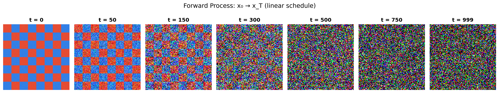

Code
import numpy as np
import matplotlib.pyplot as plt
# ── Create a simple test image (8x8 checkerboard scaled up) ──
np.random.seed(42)
block = 16
pattern = np.zeros((8*block, 8*block, 3), dtype=np.float32)
for i in range(8):
for j in range(8):
if (i + j) % 2 == 0:
pattern[i*block:(i+1)*block, j*block:(j+1)*block] = [0.9, 0.3, 0.2]
else:
pattern[i*block:(i+1)*block, j*block:(j+1)*block] = [0.2, 0.5, 0.9]
x0 = pattern
# ── LINEAR noise schedule (Ho et al. 2020) ──
T = 1000
betas = np.linspace(1e-4, 2e-2, T, dtype=np.float64)
alphas = 1.0 - betas
alpha_bar = np.cumprod(alphas)
def q_sample(x0, t, alpha_bar):
"""Forward process: sample x_t given x_0"""
eps = np.random.randn(*x0.shape)
return (np.sqrt(alpha_bar[t]) * x0 + np.sqrt(1 - alpha_bar[t]) * eps).clip(0, 1)
# ── Plot at several timesteps ──
timesteps = [0, 50, 150, 300, 500, 750, 999]
fig, axes = plt.subplots(1, len(timesteps), figsize=(16, 3))
for ax, t in zip(axes, timesteps):
xt = q_sample(x0, t, alpha_bar)
ax.imshow(xt)
ax.set_title(f"t = {t}", fontsize=12, fontweight='bold')
ax.axis("off")
fig.suptitle("Forward Process: x₀ → x_T (linear schedule)", fontsize=14, y=1.02)
plt.tight_layout()
plt.show()
